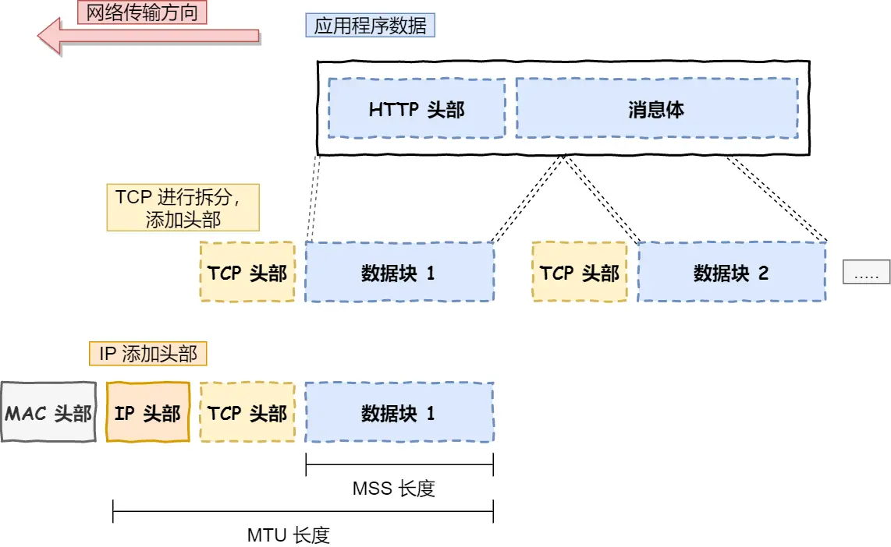
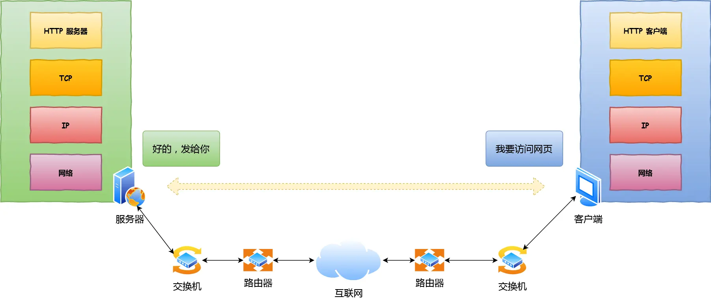
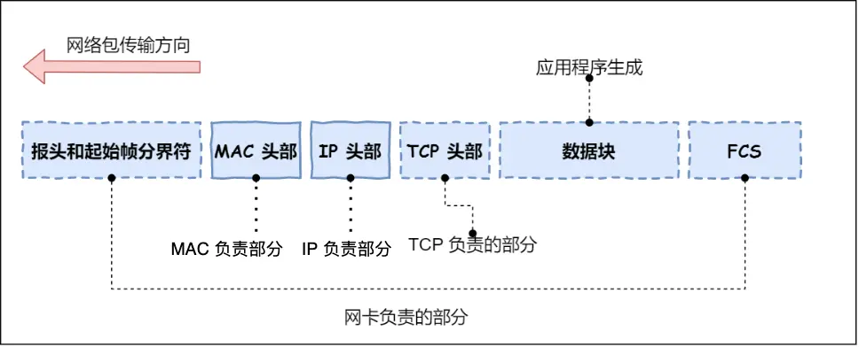
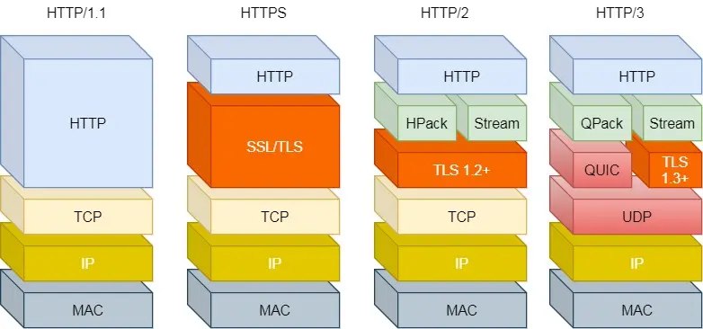

network-面试
network 面试要点
基础
TCP/IP 网络模型分层
- 应用层：向用户提供一组应用程序
操作系统中的用户态，专注为用户提供应用功能，比如 HTTP、FTP、Telnet、DNS、SMTP 等。 - 传输层：负责端到端的通信
为应用层提供网络支持，有两个传输协议，分别是 TCP 和 UDP。- TCP：流量控制、超时重传、拥塞控制保障数据包可靠传输到对方。
- UDP：只负责发送数据包、不保证到达，实时性相对较好，传输效率高。也可以实现可靠穿梭，把 TCP 的特性在应用层上实现就可以。
- 当传输层数据超过 MSS（TCP 最大报文段长度），需要分段传输，称为一个 TCP 段。同时需要端口号来区分不同的应用数据。
- 网络层：负责网络包的封装、分片、路由、转发
比如 IP、ICMP 等
IP 协议，将传输层的报文作为数据部分，再加上 IP 头组装成 IP 报文。如果大小超过 MTU （以太网中一般为 1500 字节），就会再次分片。  IP 地址分成两种意义
IP 寻址和路由：IP 协议的寻址作用是告诉我们去往下一个目的地该朝哪个方向走，路由则是根据「下一个目的地」选择路径。寻址更像在导航，路由更像在操作方向盘。1. 一个是网络号，负责标识该 IP 地址是属于哪个「子网」的； 2. 一个是主机号，负责标识同一「子网」下的不同主机； - 网络接口层：网络包在物理网络中的传输
网络接口层主要为网络层提供「链路级别」传输的服务，负责在以太网、WiFi 这样的底层网络上发送原始数据包。
比如网络包的封帧、 MAC 寻址、差错检测，以及通过网卡传输网络帧等。 - 总结

网络接口层的传输单位是帧（frame），IP 层的传输单位是包（packet），TCP 层的传输单位是段（segment），HTTP 的传输单位则是消息或报文（message）。统称为数据包。
键入网址到网页显示过程
解析 URL ，生成 HTTP 请求
- 生成发送给 web 服务器的请求信息。

- http请求和响应

- 生成发送给 web 服务器的请求信息。
DNS 域名解析查询真实 IP 地址
服务器域名对应的 IP 地址。
DNS 保存了 web 服务器和 IP 之间的对应关系。- 域名解析会通过缓存
浏览器缓存 -> 操作系统缓存 -> hosts -> 本地 DNS 服务器 - 域名解析的工作流程
客户端首先会发出一个 DNS 请求 -> 缓存 -> 本地 DNS 服务器 -> 根域名服务器 -> 顶级域名服务器 -> 权威域名服务器 -> ip
- 域名解析会通过缓存
指南好帮手 —— 协议栈
通过 DNS 获取到 IP 后，就可以把 HTTP 的传输工作交给操作系统中的协议栈。
协议栈的上半部分有两块，分别是负责收发数据的 TCP 和 UDP 协议，这两个传输协议会接受应用层的委托执行收发数据的操作。
协议栈的下面一半是用 IP 协议控制网络包收发操作。
IP 下面的网卡驱动程序负责控制网卡硬件，而最下面的网卡则负责完成实际的收发操作，也就是对网线中的信号执行发送和接收操作。可靠传输 —— TCP
- 三次握手建立连接，保证双方都有发送和接收的能力
- 一开始，客户端和服务端都处于 CLOSED 状态。先是服务端主动监听某个端口，处于 LISTEN 状态。
- 然后客户端主动发起连接 SYN，之后处于 SYN-SENT 状态。
- 服务端收到发起的连接，返回 SYN，并且 ACK 客户端的 SYN，之后处于 SYN-RCVD 状态。
- 客户端收到服务端发送的 SYN 和 ACK 之后，发送对 SYN 确认的 ACK，之后处于 ESTABLISHED 状态，因为它一发一收成功了。
- 服务端收到 ACK 的 ACK 之后，处于 ESTABLISHED 状态，因为它也一发一收了。
- TCP 分割数据
- MSS：除去 IP 和 TCP 头部之后，一个网络包所能容纳的 TCP 数据的最大长度。传输层。
- MTU：一个网络包的最大长度，以太网中一般为 1500 字节。网路层。
- 三次握手建立连接，保证双方都有发送和接收的能力
远程定位 —— IP

在 IP 协议里面需要有源地址 IP 和 目标地址 IP：
源地址IP，即是客户端输出的 IP 地址； 目标地址，即通过 DNS 域名解析得到的 Web 服务器 IP。两点传输 —— MAC
MAC 头部是以太网使用的头部，它包含了接收方和发送方的 MAC 地址等信息。ARP（Address Resolution Protocol），即地址解析协议，是根据IP地址获取物理地址的一个TCP/IP协议。
MAC 发送方和接收方如何确认?
发送方的 MAC 地址获取就比较简单了，MAC 地址是在网卡生产时写入到 ROM 里的，只要将这个值读取出来写入到 MAC 头部就可以了。 接收方的 MAC 地址就有点复杂了，ARP 协议会在以太网中以广播的形式，对以太网所有的设备喊出：“这个 IP 地址是谁的？请把你的 MAC 地址告诉我”。也就是说，在发包时：
先查询 ARP 缓存，如果其中已经保存了对方的 MAC 地址，就不需要发送 ARP 查询，直接使用 ARP 缓存中的地址。 而当 ARP 缓存中不存在对方 MAC 地址时，则发送 ARP 广播查询。出口 —— 网卡
网络包只是存放在内存中的一串二进制数字信息，没有办法直接发送给对方。因此，我们需要将数字信息转换为电信号，才能在网线上传输，也就是说，这才是真正的数据发送过程。负责执行这一操作的是网卡，要控制网卡还需要靠网卡驱动程序。
送别者 —— 交换机
交换机的设计是将网络包原样转发到目的地。交换机工作在 MAC 层，也称为二层网络设备。
和网卡不同，交换机的端口不具有 MAC 地址。出境大门 —— 路由器
网络包经过交换机之后，现在到达了路由器，并在此被转发到下一个路由器或目标设备。路由器和交换机是有区别的。
因为路由器是基于 IP 设计的，俗称三层网络设备，路由器的各个端口都具有 MAC 地址和 IP 地址； 而交换机是基于以太网设计的，俗称二层网络设备，交换机的端口不具有 MAC 地址。在网络包传输的过程中，源 IP 和目标 IP 始终是不会变的，一直变化的是 MAC 地址，因为需要 MAC 地址在以太网内进行两个设备之间的包传输。
互相扒皮 —— 服务器 与 客户端
数据包抵达服务器后，服务器会层层扒开数据包： MAC 头部 -> IP 头 -> TCP 头 -> 序列号（如果是就放入缓存中然后返回一个 ACK，如果不是就丢弃。）-> 端口号 -> 交给监听这个端口的应用程序进程 -> 将网页封装进响应报文 -> 层层协议嵌套 -> 网卡 -> 交换机 -> 路由器 -> 交换机 -> 网卡 -> 层层协议解析 -> 客户端应用进程 -> 渲染页面。总结
应用程序数据（应用层）
TCP 可靠传输（传输层）
IP 路由和寻址（网络层）
MAC 点对点传输（网络接口层）
数电转换（网卡驱动程序控制网卡）
交换机转发 （原样转发网络包）
路由器（IP 路由转发）
Linux系统如何收发网络包
- 网络模型 当应用程序通过 Socket 接口发送数据包，数据包会被网络协议栈从上到下进行逐层处理后，才会被送到网卡队列中，随后由网卡将网络包发送出去。
HTTP
HTTP 是什么
HTTP 是超文本传输协议，是一个在计算机世界里专门在「两点」之间「传输」文字、图片、音频、视频等「超文本」数据的「约定和规范」。
HTTP 常见的状态码

GET 和 POST 有什么区别？
- GET 请求的参数位置一般是写在 URL 中，URL 规定只能支持 ASCII，所以 GET 请求的参数只允许 ASCII 字符 ，而且浏览器会对 URL 的长度有限制（HTTP协议本身对 URL长度并没有做任何规定）。
- POST 请求携带数据的位置一般是写在报文 body 中，body 中的数据可以是任意格式的数据，只要客户端与服务端协商好即可，而且浏览器不会对 body 大小做限制。
GET 和 POST 方法都是安全和幂等的吗？
- 安全：指请求方法不会「破坏」服务器上的资源。
- 幂等：意思是多次执行相同的操作，结果都是「相同」的。
如果从 RFC 规范定义的语义来看：
GET 方法就是安全且幂等的。
POST 方法不安全不幂等，因为是「新增或提交数据」的操作，会修改服务器上的资源，所以是不安全的，且多次提交数据就会创建多个资源，所以不是幂等的。浏览器一般不会缓存 POST 请求，也不能把 POST 请求保存为书签。
GET 请求可以带 body 吗？
理论上，任何请求都可以带 body 的。 任何请求的 URL 中也可以有参数的。
HTTP 缓存技术
HTTP 缓存有两种实现方式，分别是强制缓存和协商缓存。
什么是强制缓存？
1. 强缓存指的是只要浏览器判断缓存没有过期，则直接使用浏览器的本地缓存，决定是否使用缓存的主动性在于浏览器这边
2. 强缓存是利用下面这两个 HTTP 响应头部（Response Header）字段实现的，它们都用来表示资源在客户端缓存的有效期：
Cache-Control， 是一个相对时间；(优先级高)
Expires，是一个绝对时间；
3. 具体的实现流程如下：
1. 当浏览器第一次请求访问服务器资源时，服务器会在返回这个资源的同时，在 Response 头部加上 Cache-Control，Cache-Control 中设置了过期时间大小；
2. 浏览器再次请求访问服务器中的该资源时，会先通过请求资源的时间与 Cache-Control 中设置的过期时间大小，来计算出该资源是否过期，如果没有，则使用该缓存，否则重新请求服务器；
3. 服务器再次收到请求后，会再次更新 Response 头部的 Cache-Control。
什么是协商缓存？
协商缓存就是与服务端协商之后，通过协商结果来判断是否使用本地缓存。
协商缓存可以基于两种头部来实现。
1. 第一种（基于时间，可被篡改，不可靠）：请求头部中的 If-Modified-Since 字段带上缓存的响应头部中的 Last-Modified 字段实现。
2. 第二种（基于唯一标识，更可靠，优先级高）：请求头部中的 If-None-Match 字段带上缓存的响应头部中的 ETag 字段（唯一标识响应资源）。
协商缓存这两个字段都需要配合强制缓存中 Cache-Control 字段来使用，只有在未能命中强制缓存的时候，才能发起带有协商缓存字段的请求。

HTTP 与 HTTPS 有哪些区别？
- HTTP 是超文本传输协议，信息是明文传输，存在安全风险的问题。HTTPS 则解决 HTTP 不安全的缺陷，在 TCP 和 HTTP 网络层之间加入了 SSL/TLS 安全协议，使得报文能够加密传输。
- HTTP 连接建立相对简单， TCP 三次握手之后便可进行 HTTP 的报文传输。而 HTTPS 在 TCP 三次握手之后，还需进行 SSL/TLS 的握手过程，才可进入加密报文传输。
- 两者的默认端口不一样，HTTP 默认端口号是 80，HTTPS 默认端口号是 443。
- HTTPS 协议需要向 CA（证书权威机构）申请数字证书，来保证服务器的身份是可信的。
HTTPS 解决了 HTTP 的哪些问题？
- HTTP 由于是明文传输，所以安全上存在以下三个风险
- 窃听风险，比如通信链路上可以获取通信内容，用户号容易没。
- 篡改风险，比如强制植入垃圾广告，视觉污染，用户眼容易瞎。
- 冒充风险，比如冒充淘宝网站，用户钱容易没。
- HTTPS 在 HTTP 与 TCP 层之间加入了 SSL/TLS 协议，可以很好的解决了上述的风险：
- 信息加密（混合加密实现信息的机密性）：交互信息无法被窃取。
- 校验机制（摘要算法的方式来实现完整性）：无法篡改通信内容，篡改了就不能正常显示。
- 身份证书（服务器公钥放入到数字证书）：证明淘宝是真的淘宝网。
http1.0/1.1/2/3比较
http1.1 优点
- 使用长连接的方式改善1.0短连接造成的性能开销
- 支持管道网络传输，不必等前一个请求回来就可以发出下一个请求，减少整体响应时间
http2（基于https） 优点
- 头部压缩（HPACK 算法，维护头信息表，只发送索引号）
- 二进制格式（头信息和数据体都是二进制，统称为帧）
- 并发传输（多个stream复用tcp链接，解决http层面队头阻塞问题）
- 服务器主动推送（客户端stream为奇数号，服务端为偶数号，比如网页中的其他css依赖）
http3 优点
- 把http下层的 tcp 协议改成了 udp 。
UDP 发送是不管顺序，也不管丢包的，所以不会出现像 HTTP/2 队头阻塞的问题。 - 增加 基于 UDP 的 QUIC 协议实现类似 TCP 的可靠传输。
- 无队头阻塞
- 更快的连接建立
- 连接迁移
- tcp 四元组（源地址、源端口、目的地址、目的端口）
- QUIC 链接ID
所以， QUIC 是一个在 UDP 之上的伪 TCP + TLS + HTTP/2 的多路复用的协议。
- 把http下层的 tcp 协议改成了 udp 。
TCP
基于 udp 实现可靠传输
TCP 可靠传输的特性（序列号、确认应答、超时重传、流量控制、拥塞控制）在应用层实现一遍。
1. TCP 协议四个方面的缺陷：
1. 升级 TCP 的工作很困难；
2. TCP 建立连接的延迟；
3. TCP 存在队头阻塞问题；
4. 网络迁移需要重新建立 TCP 连接;
市面上已经有基于 UDP 协议实现的可靠传输协议的成熟方案了，那就是 QUIC 协议，已经应用在了 HTTP/3。
什么是 TCP ？
TCP 是面向连接的、可靠的、基于字节流的传输层通信协议。
什么是 TCP 连接？
用于保证可靠性和流量控制维护的某些状态信息，这些信息的组合，包括 Socket、序列号和窗口大小称为连接。
建立一个 TCP 连接是需要客户端与服务端达成上述三个信息的共识。
Socket：由 IP 地址和端口号组成
序列号：用来解决乱序问题等
窗口大小：用来做流量控制
UDP 和 TCP 有什么区别呢？
- 连接
- TCP 是面向连接的传输层协议，传输数据前先要建立连接。
- UDP 是不需要连接，即刻传输数据。
- 服务对象
- TCP 是一对一的两点服务，即一条连接只有两个端点。
- UDP 支持一对一、一对多、多对多的交互通信。
- 可靠性
- TCP 是可靠交付数据的，数据可以无差错、不丢失、不重复、按序到达。
- UDP 是尽最大努力交付，不保证可靠交付数据。
- 拥塞控制、流量控制
- TCP 有拥塞控制和流量控制机制，保证数据传输的安全性。
- UDP 则没有，即使网络非常拥堵了，也不会影响 UDP 的发送速率。
- 首部开销
- TCP 首部长度较长，会有一定的开销。
- UDP 首部只有 8 个字节，并且是固定不变的，开销较小。
- 传输方式
- TCP 是流式传输，没有边界，但保证顺序和可靠。
- UDP 是一个包一个包的发送，是有边界的，但可能会丢包和乱序。
端口的TCP最大连接数是多少？
TCP最大连接数 = 客户端的ip数 x 客户端的端口数
= 2^32 x 2^16
= 2^48
还受以下影响
1. 文件描述符
每个 TCP 连接都是一个文件，如果文件描述符被占满了，会发生 Too many open files。
2. 内存限制
每个 TCP 连接都要占用一定内存，操作系统的内存是有限的，如果内存资源被占满后，会发生 OOM。
TCP 和 UDP 可以同时绑定相同的端口吗？
可以的。
传输层有两个传输协议分别是 TCP 和 UDP，在内核中是两个完全独立的软件模块。
多个 TCP 服务进程可以绑定同一个端口吗？
如果两个 TCP 服务进程同时绑定的 IP 地址和端口都相同，那么执行 bind() 时候就会出错，错误是“Address already in use”。
重启 TCP 服务进程时，为什么会有“Address in use”的报错信息？
当我们重启 TCP 服务进程的时候，意味着通过服务器端发起了关闭连接操作，于是就会经过四次挥手，而对于主动关闭方，会在 TIME_WAIT 这个状态里停留一段时间，这个时间大约为 2MSL。
客户端的端口可以重复使用吗？
可以，因为内核是通过四元组信息来定位一个 TCP 连接的，并不会因为客户端的端口号相同，而导致连接冲突的问题。
tcp 为什么是三次握手
TCP 建立连接时，通过三次握手能防止历史连接的建立，能减少双方不必要的资源开销，能帮助双方同步初始化序列号。序列号能够保证数据包不重复、不丢弃和按序传输。
不使用「两次握手」和「四次握手」的原因：
「两次握手」：无法防止历史连接的建立，会造成双方资源的浪费，也无法可靠的同步双方序列号；
「四次握手」：三次握手就已经理论上最少可靠连接建立，所以不需要使用更多的通信次数。
为什么每次建立 TCP 连接时，初始化的序列号都要求不一样呢？
- 为了防止历史报文被下一个相同四元组的连接接收（主要方面）。
- 为了安全性，防止黑客伪造的相同序列号的 TCP 报文被对方接收；
既然 IP 层会分片，为什么 TCP 层还需要 MSS 呢？
- 如果仅有IP分片，那么当如果一个 IP 分片丢失，整个 IP 报文的所有分片都得重传。
因为 IP 层本身没有超时重传机制，它由传输层的 TCP 来负责超时和重传。
经过 TCP 层分片后，如果一个 TCP 分片丢失后，进行重发时也是以 MSS 为单位，而不用重传所有的分片，大大增加了重传的效率。
为什么挥手需要四次？
在特定情况下，四次挥手是可以变成三次挥手的。主要看服务端关闭后是否需要处理数据，如果不需要处理数据，则可以直接将第二次和第三次挥手整合成一次。
IP
ping 的工作原理
ping 是基于网络层的 ICMP 协议工作的，是其查询报文类型的使用。
ICMP 全称是 Internet Control Message Protocol，也就是互联网控制报文协议。
ICMP 主要的功能包括：确认 IP 包是否成功送达目标地址、报告发送过程中 IP 包被废弃的原因和改善网络设置等。
ICMP 的这种通知消息会使用 IP 进行发送 。
ping 这个程序是使用了 ICMP 里面的 ECHO REQUEST（类型为 8 ） 和 ECHO REPLY （类型为 0）。
断网了，还能 ping 通 127.0.0.1 吗？
拔了网线，ping 127.0.0.1 是能ping通的。
从应用层到传输层再到网络层。这段路径跟ping外网的时候是几乎是一样的。到了网络层，系统会根据目的IP，在路由表中获取对应的路由信息，而这其中就包含选择哪个网卡把消息发出。
当发现目标IP是外网IP时，会从"真网卡"发出。
当发现目标IP是回环地址时，就会选择本地网卡。
IPV4: 127 开头的都属于回环地址，127.0.0.1是众多回环地址中的一个。
IPV6: 回环地址是 ::1，中间把连续的0给省略了，之所以不是7个 冒号，而是2个冒号: ， 是因为一个 IPV6 地址中只允许出现⼀次两个连续的冒号。
在IPV4下用的是 ping 127.0.0.1 命令。在IPV6下用的是 ping6 ::1 命令。
虽然ICMP协议和IP协议都属于网络层协议，但其实ICMP也是利用了IP协议进行消息的传输。
TCP发数据和ping的区别
TCP: mac头 + IP头 + TCP头 + tcp数据
PING: mac头 + IP头 + ICMP头 + ping数据
socket
linux里万物皆文件，那你要发消息的目的地，也是个文件，这里就引出了socket 的概念。
在 TCP 传输中创建的方式是 socket(AF_INET, SOCK_STREAM, 0);，其中 AF_INET 表示将使用 IPV4 里 host:port 的方式去解析待会你输入的网络地址。SOCK_STREAM 是指使用面向字节流的 TCP 协议，工作在传输层。
创建好了 socket 之后，就可以愉快的把要传输的数据写到这个文件里。调用 socket 的sendto接口的过程中进程会从用户态进入到内核态，最后会调用到 sock_sendmsg 方法。
然后进入传输层，带上TCP头。网络层带上IP头，数据链路层带上 MAC头等一系列操作后。进入网卡的发送队列 ring buffer ，顺着网卡就发出去了。
回到 ping ， 整个过程也基本跟 TCP 发数据类似，差异的地方主要在于，创建 socket 的时候用的是 socket(AF_INET,SOCK_RAW,IPPROTO_ICMP)，SOCK_RAW 是原始套接字 ，工作在网络层， 所以构建ICMP（网络层协议）的数据，是再合适不过了。ping 在进入内核态后最后也是调用的 sock_sendmsg 方法，进入到网络层后加上ICMP和IP头后，数据链路层加上MAC头，也是顺着网卡发出。因此 本质上ping 跟 普通应用发消息 在程序流程上没太大差别。
ping回环地址和ping本机地址有什么区别
ping回环地址和ping本机地址没有区别。
相关的网络数据，都是走的 lo0 “假网卡”，都会经过网络层和数据链路层等逻辑，最后在快要出网卡前狠狠拐了个弯， 将数据插入到一个链表后就软中断通知 ksoftirqd 来进行收数据的逻辑，压根就不出网络。所以断网了也能 ping 通回环地址。
127.0.0.1 和 localhost 以及 0.0.0.0 有区别吗
127.0.0.1: 本地回环地址
localhost: 是一个域名，只不过默认会把它解析为 127.0.0.1，当然这可以在 /etc/hosts 文件下进行修改。
0.0.0.0: 执行 ping 0.0.0.0，是会失败的，因为它在IPV4中表示的是无效的目标地址。
我们启动服务器的时候，一般会 listen 一个 IP 和端口，等待客户端的连接。
如果此时 listen 的是本机的 0.0.0.0 , 那么它表示本机上的所有IPV4地址。